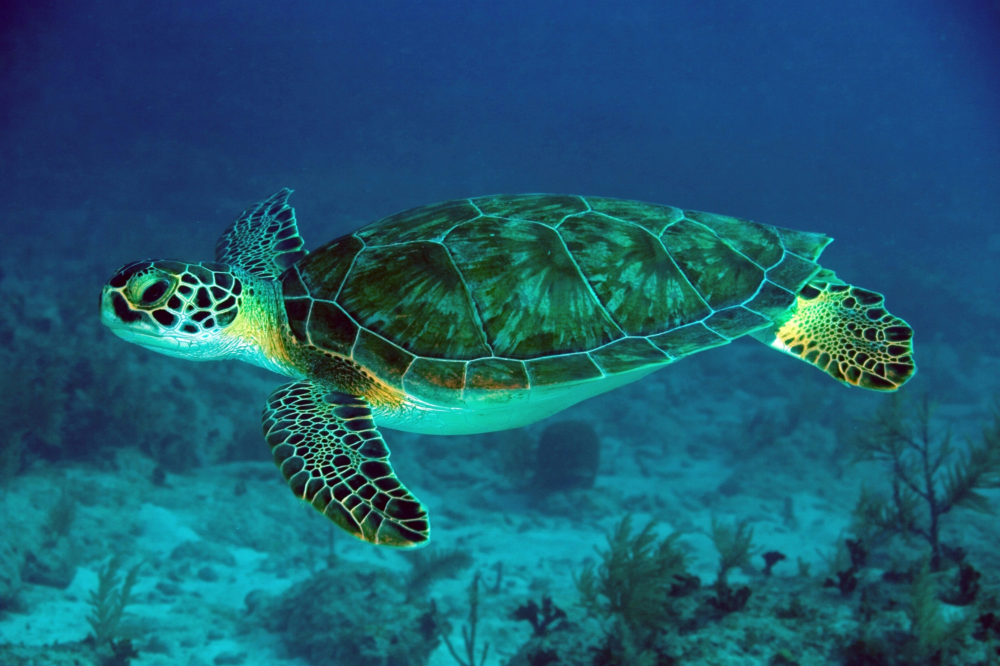
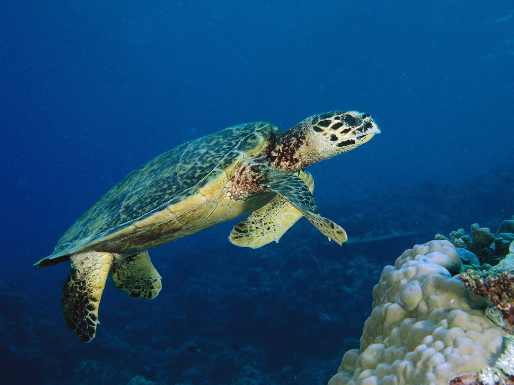
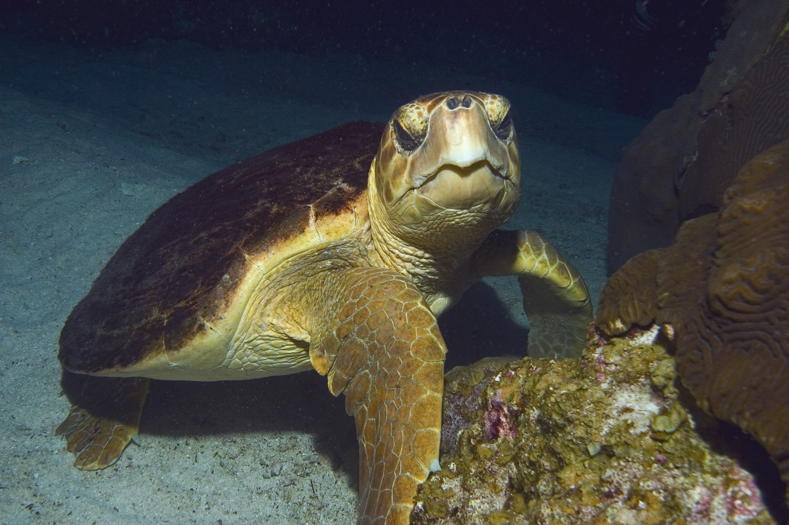

The green turtle, one of the most beautiful creatures living in our country's coastal regions, is known to frequent our coasts. Its unmistakable carapace resembles a heart and is made of cartilage. This magnificent creature can weigh up to 700 pounds and live for up to thirty years, enjoying an astonishing life span.
Hawksbill turtles, like other species of turtle, live in our country's shores. Unfortunately, this animal is currently considered an endangered species and can typically be found near beach E or beach F. Their narrow beaks are specially adapted for extracting food from hard-to-reach coral reef spaces while also sporting an eye-catching carapace design often utilized in the creation of decorative objects.
Two species of loggerhead turtles are found in the waters surrounding our countries. One is endowed with an enormous head and mighty mandibles, while its counterpart is relatively small bodied. The larger headed variant can weigh as much as 500 pounds; its counterpart shows diminished mass along with a reduced skull size.
| Turtle Name | Location | Places in Sri Lanka | Image |
|---|---|---|---|
| Green Turtle | Tropical and subtropical waters | Rekawa |  |
| Hawksbill Turtle | Tropical and subtropical waters | Bundala and Kosgoda |  |
| Loggerhead Turtle | Temperatevand tropical waters | Rekawa, Kosgoda and Bundala |  |
| WE ALL HAVE RESPONSIBLE TO SAVE THEM ! | |||